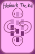
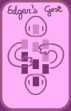

<article class="Page--centered Page">
  <main>
    <section class="CardList--2w CardList" style="gap: 0% 14%; padding: 4% 13%; align-self: stretch;">
      <figure class="Card"></figure>
      <figure class="Card"></figure>
    </section>
  </main>

  <footer>
    <p>Your First Kin</p>
    <p>4</p>
  </footer>

  <a class="Page-prev" href="./5.html"></a>
  <a class="Page-next" href="./7.html"></a>
</article>
